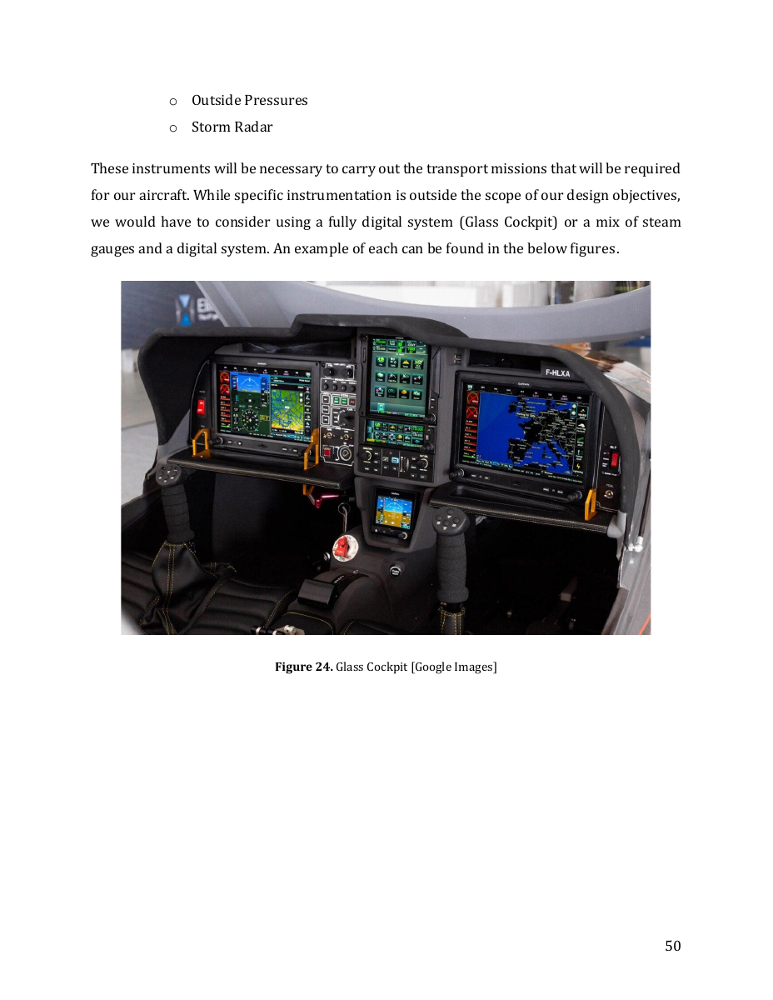

SOURCE: AAE 251 TEAM DESIGN REPORTAIRCRAFT DESIGN / MATLAB / PERFORMANCE ANALYSIS
Arctic STOL Aircraft
A conceptual short takeoff and landing aircraft designed by a four-person Purdue team for transportation and access to remote Arctic communities. I led the MATLAB coding, engineering calculations, and computational modeling behind the sizing, aerodynamics, and performance analysis; the overall aircraft design was a four-person team effort.
5,861 lbEstimated takeoff weight
658 ftEstimated takeoff distance
850 nmiProjected maximum range